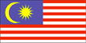

{kind=link}


![[Country map of Malaysia]](../maps/my-map.jpg)
| Malaysia |  |
|
| | |
| Introduction |
Background: Malaysia was created in 1963 through the merging of Malaya (independent in 1957) and the former British Singapore, both of which formed West Malaysia, and Sabah and Sarawak in north Borneo, which composed East Malaysia. The first three years of independence were marred by hostilities with Indonesia. Singapore seceded from the union in 1965.
| Geography |
Location: Southeastern Asia, peninsula and northern one-third of the island of Borneo, bordering Indonesia and the South China Sea, south of Vietnam
Geographic coordinates: 2 30 N, 112 30 E
Map references: Southeast Asia
Area:
total:
329,750 sq km
land:
328,550 sq km
water:
1,200 sq km
Area - comparative: slightly larger than New Mexico
Land boundaries:
total:
2,669 km
border countries:
Brunei 381 km, Indonesia 1,782 km, Thailand 506 km
Coastline: 4,675 km (Peninsular Malaysia 2,068 km, East Malaysia 2,607 km)
Maritime claims:
continental shelf:
200-m depth or to the depth of exploitation; specified boundary in the South China Sea
exclusive economic zone:
200 nm
territorial sea:
12 nm
Climate: tropical; annual southwest (April to October) and northeast (October to February) monsoons
Terrain: coastal plains rising to hills and mountains
Elevation extremes:
lowest point:
Indian Ocean 0 m
highest point:
Gunung Kinabalu 4,100 m
Natural resources: tin, petroleum, timber, copper, iron ore, natural gas, bauxite
Land use:
arable land:
3%
permanent crops:
12%
permanent pastures:
0%
forests and woodland:
68%
other:
17% (1993 est.)
Irrigated land: 2,941 sq km (1998 est.)
Natural hazards: flooding, landslides
Environment - current issues: air pollution from industrial and vehicular emissions; water pollution from raw sewage; deforestation; smoke/haze from Indonesian forest fires
Environment - international agreements:
party to:
Biodiversity, Climate Change, Desertification, Endangered Species, Hazardous Wastes, Law of the Sea, Marine Life Conservation, Nuclear Test Ban, Ozone Layer Protection, Ship Pollution, Tropical Timber 83, Tropical Timber 94, Wetlands
signed, but not ratified:
Climate Change-Kyoto Protocol
Geography - note: strategic location along Strait of Malacca and southern South China Sea
| People |
Population: 21,793,293 (July 2000 est.)
Age structure:
0-14 years:
35% (male 3,914,112; female 3,697,731)
15-64 years:
61% (male 6,655,506; female 6,642,073)
65 years and over:
4% (male 386,387; female 497,484) (2000 est.)
Population growth rate: 2.01% (2000 est.)
Birth rate: 25.3 births/1,000 population (2000 est.)
Death rate: 5.25 deaths/1,000 population (2000 est.)
Net migration rate:
0 migrant(s)/1,000 population (2000 est.)
note:
does not reflect net flow of an unknown number of illegal immigrants from other countries in the region
Sex ratio:
at birth:
1.06 male(s)/female
under 15 years:
1.06 male(s)/female
15-64 years:
1 male(s)/female
65 years and over:
0.78 male(s)/female
total population:
1.01 male(s)/female (2000 est.)
Infant mortality rate: 20.96 deaths/1,000 live births (2000 est.)
Life expectancy at birth:
total population:
70.83 years
male:
68.22 years
female:
73.63 years (2000 est.)
Total fertility rate: 3.29 children born/woman (2000 est.)
Nationality:
noun:
Malaysian(s)
adjective:
Malaysian
Ethnic groups: Malay and other indigenous 58%, Chinese 26%, Indian 7%, others 9%
Religions: Islam, Buddhism, Daoism, Hinduism, Christianity, Sikhism; note - in addition, Shamanism is practiced in East Malaysia
Languages: Bahasa Melayu (official), English, Chinese dialects (Cantonese, Mandarin, Hokkien, Hakka, Hainan, Foochow), Tamil, Telugu, Malayalam, Panjabi, Thai; note - in addition, in East Malaysia several indigenous languages are spoken, the largest of which are Iban and Kadazan
Literacy:
definition:
age 15 and over can read and write
total population:
83.5%
male:
89.1%
female:
78.1% (1995 est.)
| Government |
Country name:
conventional long form:
none
conventional short form:
Malaysia
former:
Malayan Union
Data code: MY
Government type:
constitutional monarchy
note:
Malaya (what is now Peninsular Malaysia) formed 31 August 1957; Federation of Malaysia (Malaya, Sabah, Sarawak, and Singapore) formed 9 July 1963 (Singapore left the federation on 9 August 1965); nominally headed by the paramount ruler and a bicameral Parliament consisting of a nonelected upper house and an elected lower house; Peninsular Malaysian states - hereditary rulers in all but Melaka, Penang, Sabah, and Sarawak, where governors are appointed by the Malaysian Government; powers of state governments are limited by the federal constitution; under terms of the federation, Sabah and Sarawak retain certain constitutional prerogatives (e.g., the right to maintain their own immigration controls); Sabah - holds 20 seats in House of Representatives, with foreign affairs, defense, internal security, and other powers delegated to federal government; Sarawak - holds 28 seats in House of Representatives, with foreign affairs, defense, internal security, and other powers delegated to federal government
Capital: Kuala Lumpur
Administrative divisions:
13 states (negeri-negeri, singular - negeri) and 2 federal territories* (wilayah-wilayah persekutuan, singular - wilayah persekutuan); Johor, Kedah, Kelantan, Labuan*, Melaka, Negeri Sembilan, Pahang, Perak, Perlis, Pulau Pinang, Sabah, Sarawak, Selangor, Terengganu, Wilayah Persekutuan*
note:
the city of Kuala Lumpur is located within the federal territory of Wilayah Persekutuan; the terms therefore are not interchangeable
Independence: 31 August 1957 (from UK)
National holiday: National Day, 31 August (1957)
Constitution: 31 August 1957, amended 16 September 1963
Legal system: based on English common law; judicial review of legislative acts in the Supreme Court at request of supreme head of the federation; has not accepted compulsory ICJ jurisdiction
Suffrage: 21 years of age; universal
Executive branch:
chief of state:
Paramount Ruler Sultan TUNKU SALAHUDDIN Abdul Aziz Shah ibni Al-Marhum Sultan Hisammuddin Alam Shah (since 26 April 1999); Deputy Paramount Ruler Sultan MIZAN Zainal Abidin ibni A-Marhum Sultan Mahmud Al-Muktafi Billah Shah
head of government:
Prime Minister Dr. MAHATHIR bin Mohamad (since 16 July 1981); Deputy Prime Minister ABDULLAH bin Ahmad Badawi (since 8 January 1999)
cabinet:
Cabinet appointed by the prime minister from among the members of Parliament with consent of the paramount ruler
elections:
paramount ruler and deputy paramount ruler elected by and from the hereditary rulers of nine of the states for five-year terms; election last held 27 February 1999 (next to be held NA 2004); prime minister designated from among the members of the House of Representatives; following legislative elections, the leader of the party that wins a plurality of seats in the House of Representatives becomes prime minister
election results:
Sultan TUNKU SALAHUDDIN Abdul Aziz Shah ibni Al-Marhum Sultan Hisammuddin Alam Shah elected paramount ruler; Sultan MIZAN Zainal Abidin ibni A-Marhum Sultan Mahmud Al-Muktafi Billah Shah elected deputy paramount ruler
Legislative branch:
bicameral Parliament or Parlimen consists of nonelected Senate or Dewan Negara (69 seats; 43 appointed by the paramount ruler, 26 appointed by the state legislatures) and the House of Representatives or Dewan Rakyat (193 seats; members elected by popular vote weighted toward the rural Malay population to serve five-year terms)
elections:
House of Representatives - last held 29 November 1999 (next to be held 3 November 2004)
election results:
House of Representatives - percent of vote by party - NF 56%, other 44%; seats by party - NF 148, PAS 27, DAP 10, NJP 5, PBS 3
Judicial branch: Supreme Court, judges appointed by the paramount ruler on the advice of the prime minister
Political parties and leaders:
State Reform Party or STAR [PATAV Rubis]; Democratic Action Party or DAP [LIM Kit Siang]; Gerakan Rakyat Malaysia [LIM Keng Yaik]; Liberal Democratic Party [leader NA]; Malaysian Chinese Association or MCA [LING Liong Sik]; Malaysian Indian Congress or MIC [S. Samy VELLU]; National Front or NF [MAHATHIR bin Mohamad] (a coalition of 14 political parties, dominated by the UMNO, and including the UPKO, SAPP, and the Liberal Democratic Party); National Justice Party or NJP [WAN AZIZAH Wan Ismail]; Parti Akar [Datuk PANDIKAR Amin Mulia]; Parti Bansa Dayak Sarawak or PBDS [Datuk Leo MOGGIE]; Parti Bersekutu [HARRIS Salleh]; Parti Islam SeMalaysia or PAS [Ustaz Fadzil Mohamed NOOR]; Party Pesaka Bumiputra Bersatu or PBB [Datuk Patinggi Haji Abdul TAIB Mahmud]; Sabah People's Progressive Party or SAPP [YONG Teck Lee]; Sabah People's United Party (Parti Bersatu Rakyat Sabah) or PBRS [Datuk Joseph KURUP]; Sarawak National Party or SNAP [Datuk Amar James WONG]; Sarawak United People's Party or SUPP [Datuk Dr. George CHAN Hong Nam]; United Kadazan People's Organization or UPKO (formerly Parti Demokratik Sabah) [Bernard DOMPOK]; United Malays National Organization or UMNO [OSU Sukam]; United Sabah Party (main opposition party) (Parti Bersatu Sabah) or PBS [Dr. Joseph PAIRIN Kitingan]
note:
subsequent to the election, the following parties were dissolved - Spirit of '46 or Semangat '46 [Tengku Tan Sri RAZALEIGH, president] and Sabah United Party (Parti Bersatu Sabah) or PBS [Datuk Seri Joseph PAIRIN Kitingan]
International organization participation: APEC, AsDB, ASEAN, C, CCC, CP, ESCAP, FAO, G-15, G-77, IAEA, IBRD, ICAO, ICFTU, ICRM, IDA, IDB, IFAD, IFC, IFRCS, ILO, IMF, IMO, Inmarsat, Intelsat, Interpol, IOC, ISO, ITU, MINURSO, NAM, OIC, OPCW, UN, UN Security Council (temporary), UNCTAD, UNESCO, UNIDO, UNIKOM, UNMIBH, UNMIK, UNTAET, UPU, WCL, WFTU, WHO, WIPO, WMO, WTrO
Diplomatic representation in the US:
chief of mission:
Ambassador Dato' GHAZZALI Sheikh Abdul Khalid
chancery:
2401 Massachusetts Avenue NW, Washington, DC 20008
telephone:
[1] (202) 328-2700
FAX:
[1] (202) 483-7661
consulate(s) general:
Los Angeles and New York
Diplomatic representation from the US:
chief of mission:
Ambassador B. Lynn PASCOE
embassy:
376 Jalan Tun Razak, 50400 Kuala Lumpur
mailing address:
P. O. Box No. 10035, 50700 Kuala Lumpur; American Embassy Kuala Lumpur, APO AP 96535-8152
telephone:
[60] (3) 2168-5000
FAX:
[60] (3) 242-2207
Flag description: 14 equal horizontal stripes of red (top) alternating with white (bottom); there is a blue rectangle in the upper hoist-side corner bearing a yellow crescent and a yellow fourteen-pointed star; the crescent and the star are traditional symbols of Islam; the design was based on the flag of the US
| Economy |
Economy - overview: Malaysia made a quick economic recovery in 1999 from its worst recession since independence in 1957. GDP grew 5%, responding to a dynamic export sector, which grew over 10% and fiscal stimulus from higher government spending. The large export surplus has enabled the country to build up its already substantial financial reserves, to $31 billion at yearend 1999. This stable macroeconomic environment, in which both inflation and unemployment stand at 3% or less, has made possible the relaxation of most of the capital controls imposed by the government in 1998 to counter the impact of the Asian financial crisis. Government and private forecasters expect Malaysia to continue this trend in 2000, predicting GDP to grow another 5% to 6%. While Malaysia's immediate economic horizon looks bright, its long-term prospects are clouded by the lack of reforms in the corporate sector, particularly those dealing with competitiveness and high corporate debt.
GDP: purchasing power parity - $229.1 billion (1999 est.)
GDP - real growth rate: 5% (1999 est.)
GDP - per capita: purchasing power parity - $10,700 (1999 est.)
GDP - composition by sector:
agriculture:
12%
industry:
46%
services:
42% (1998)
Population below poverty line: 6.8% (1997 est.)
Household income or consumption by percentage share:
lowest 10%:
1.4%
highest 10%:
20.4% (1997 est.)
Inflation rate (consumer prices): 2.8% (1999)
Labor force: 9.3 million (1999 est.)
Labor force - by occupation: manufacturing 27%, agriculture, forestry, and fisheries 16%, local trade and tourism 17%, services 15%, government 10%, construction 9% (1999 est.)
Unemployment rate: 3% (1999 est.)
Budget:
revenues:
$23.2 billion
expenditures:
$27.6 billion, including capital expenditures of $NA (1999)
Industries: Peninsular Malaysia - rubber and oil palm processing and manufacturing, light manufacturing industry, electronics, tin mining and smelting, logging and processing timber; Sabah - logging, petroleum production; Sarawak - agriculture processing, petroleum production and refining, logging
Industrial production growth rate: 8.5% (1999 est.)
Electricity - production: 57.435 billion kWh (1998)
Electricity - production by source:
fossil fuel:
94.78%
hydro:
5.22%
nuclear:
0%
other:
0% (1998)
Electricity - consumption: 53.423 billion kWh (1998)
Electricity - exports: 75 million kWh (1998)
Electricity - imports: 83 million kWh (1998)
Agriculture - products: Peninsular Malaysia - rubber, palm oil, rice; Sabah - subsistence crops, rubber, timber, coconuts, rice; Sarawak - rubber, pepper; timber
Exports: $83.5 billion (1999 est.)
Exports - commodities: electronic equipment, petroleum and liquefied natural gas, chemicals, palm oil, wood and wood products, rubber, textiles
Exports - partners: US 23%, Singapore 16%, Japan 11%, Hong Kong 5%, Netherlands 5%, Taiwan 5%, Thailand 3% (1999 est.)
Imports: $61.5 billion (1999 est.)
Imports - commodities: machinery and equipment, chemicals, food, fuel and lubricants
Imports - partners: Japan 21%, US 18%, Singapore 14%, Taiwan 5%, South Korea 5%, Thailand 4%, China 3% (1999 est.)
Debt - external: $43.6 billion (1999 est.)
Currency: 1 ringgit (M$) = 100 sen
Exchange rates: ringgits (M$) per US$1 - 3.8000 (January 2000), 3.8000 (1999), 3.9244 (1998), 2.8133 (1997), 2.5159 (1996), 2.5044 (1995)
Fiscal year: calendar year
| Communications |
Telephones - main lines in use: 4.4 million (1998)
Telephones - mobile cellular: 2.17 million (1998)
Telephone system:
international service good
domestic:
good intercity service provided on Peninsular Malaysia mainly by microwave radio relay; adequate intercity microwave radio relay network between Sabah and Sarawak via Brunei; domestic satellite system with 2 earth stations
international:
submarine cables to India, Hong Kong, and Singapore; satellite earth stations - 2 Intelsat (1 Indian Ocean and 1 Pacific Ocean)
Radio broadcast stations: AM 56, FM 31 (plus 13 repeater stations), shortwave 5 (1999)
Radios: 9.1 million (1997)
Television broadcast stations: 27 (plus 15 high-power repeaters) (1999)
Televisions: 3.6 million (1997)
Internet Service Providers (ISPs): 8 (1999)
| Transportation |
Railways:
total:
1,801 km
narrow gauge:
1,801 km 1.000-m gauge (148 km electrified) (2000)
Highways:
total:
94,500 km
paved:
70,970 km (including 580 km of expressways)
unpaved:
23,530 km (1996 est.)
Waterways: 7,296 km (Peninsular Malaysia 3,209 km, Sabah 1,569 km, Sarawak 2,518 km)
Pipelines: crude oil 1,307 km; natural gas 379 km
Ports and harbors: Bintulu, Kota Kinabalu, Kuantan, Kuching, Kudat, Labuan, Lahad Datu, Lumut, Miri, Pasir Gudang, Penang, Port Dickson, Port Kelang, Sandakan, Sibu, Tanjung Berhala, Tanjung Kidurong, Tawau
Merchant marine:
total:
361 ships (1,000 GRT or over) totaling 5,000,706 GRT/7,393,915 DWT
ships by type:
bulk 61, cargo 119, chemical tanker 34, container 55, liquified gas 19, livestock carrier 1, passenger 2, petroleum tanker 57, refrigerated cargo 1, roll-on/roll-off 6, specialized tanker 1, vehicle carrier 5 (1999 est.)
Airports: 115 (1999 est.)
Airports - with paved runways:
total:
32
over 3,047 m:
5
2,438 to 3,047 m:
4
1,524 to 2,437 m:
11
914 to 1,523 m:
6
under 914 m:
6 (1999 est.)
Airports - with unpaved runways:
total:
83
1,524 to 2,437 m:
1
914 to 1,523 m:
8
under 914 m:
74 (1999 est.)
Heliports: 1 (1999 est.)
| Military |
Military branches: Malaysian Army, Royal Malaysian Navy, Royal Malaysian Air Force, Royal Malaysian Police Force, Marine Police, Sarawak Border Scouts
Military manpower - military age: 21 years of age
Military manpower - availability:
males age 15-49:
5,662,933 (2000 est.)
Military manpower - fit for military service:
males age 15-49:
3,431,602 (2000 est.)
Military manpower - reaching military age annually:
males:
183,139 (2000 est.)
Military expenditures - dollar figure: $1.211 billion (FY98)
Military expenditures - percent of GDP: 1.6% (FY98)
| Transnational Issues |
Disputes - international: involved in a complex dispute over the Spratly Islands with China, Philippines, Taiwan, Vietnam, and possibly Brunei; Philippines have not fully revoked claim to Sabah State; two islands in dispute with Singapore; Sipadan and Ligitan Islands in dispute with Indonesia
Illicit drugs: transit point for some illicit drugs going to Western markets; drug trafficking prosecuted vigorously and carries severe penalties